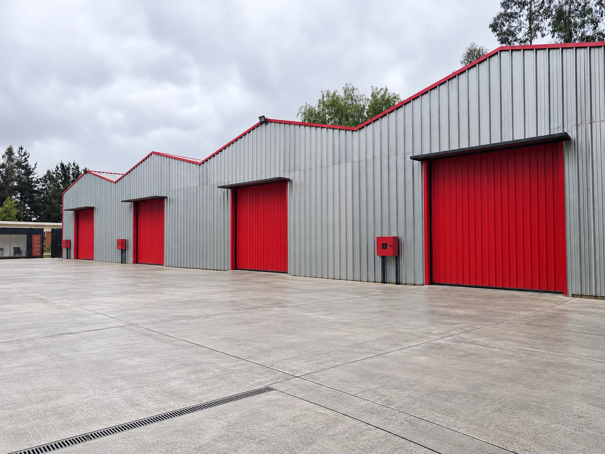
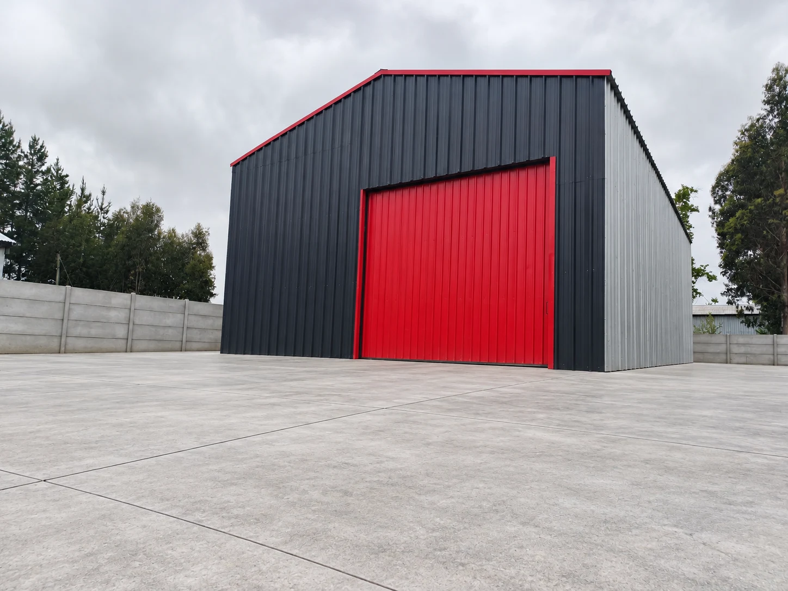

Espacios independientes
Una distribución que permite evaluar distintas escalas de operación.

Bodegas con carácter. Oportunidades con visión.
Un lugar para proyectar el futuro de su empresa.
En Inversiones San Cristóbal entendemos que un inmueble es más que una superficie: es la base de una operación y el inicio de nuevas posibilidades.
Presentamos nuestros espacios a empresas e inversionistas que buscan establecerse, expandir su actividad o desarrollar un proyecto. Evaluamos cada propuesta de forma directa, con una mirada seria y de largo plazo.
Hablemos de su proyectoAlmacenamiento, distribución o una nueva inversión.
Explore las posibilidades del conjunto.

CONJUNTO SAN CRISTÓBALEspacios de estructura metálica, portones de acceso amplio y áreas exteriores para acompañar distintas necesidades operativas.
Superficies referenciales. Características y disponibilidad a confirmar en visita.
Solicitar una visitaUna distribución que permite evaluar distintas escalas de operación.
Portones de gran formato y áreas exteriores junto a las bodegas.
Una base para almacenamiento, distribución y proyectos comerciales.
Una oficina de administración y dos baños complementan las bodegas y sus áreas exteriores.
Fotografías actuales de las instalaciones complementarias.
Visualización de los espacios despejados y acondicionados.
Seleccione una fotografía para ampliarla.
Imágenes intervenidas digitalmente para ilustrar el potencial de los espacios. El pavimento exterior es una propuesta de acondicionamiento.
Estamos abiertos a propuestas de arriendo y adquisición que se alineen con el potencial de nuestros activos. Cada proyecto merece una evaluación a su medida.
Conversemos sobre la superficie, el plazo y las condiciones que necesita su empresa.
Consultar por arriendoEvaluamos propuestas de compra del conjunto para inversionistas con visión de largo plazo.
Presentar interés de compraCuéntenos qué busca. Coordinemos una visita y exploremos juntos las posibilidades.
Visitas al conjunto previa coordinación.